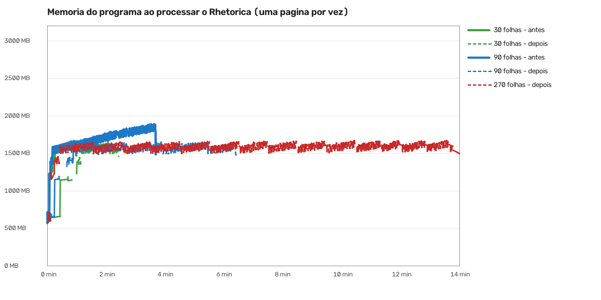

O programa guardava o livro novo inteiro na memória até o fim, e só então gravava o PDF no disco. Quanto maior o livro, mais memória. No Rhetorica a memória do computador acabava e aparecia "Este livro ficou grande demais para a memória do computador". Era defeito do programa.
Agora as páginas prontas vão para o disco aos poucos, e a memória fica parada, seja o livro pequeno ou grande. O PDF sai igual, sem perda. Com 270 folhas do Rhetorica, que antes caía, o processamento terminou.
O aviso também mudou (sua escolha na Central, 2-12): "Faltou memória no computador: outros programas abertos estão usando quase toda a memória. Feche o que não estiver usando. Nada do seu trabalho no livro se perdeu.", com os botões "tentar de novo" e "entendi". Agora ele só deve aparecer quando outros programas ocupam a memória.
Linha cheia: antes do conserto (sobe com o livro). Tracejada: depois (parada em ~1.650 MB).

| Caminho | Folhas | Código | Pico do programa | Resultado | Onde foi o pico | |
|---|---|---|---|---|---|---|
| Processar | 30 | antes | 1.665 MB | 87 MB | pronto | processar as páginas |
| Processar | 30 | depois | 1.652 MB | 87 MB | pronto | processar as páginas |
| Processar | 90 | antes | 1.891 MB | 301 MB | pronto | processar as páginas |
| Processar | 90 | depois | 1.664 MB | 301 MB | pronto | processar as páginas |
| Processar | 270 | depois | 1.674 MB | 921 MB | pronto | processar as páginas |
| Processar + Montar cadernos | 30 | antes | 1.659 MB | 87 MB | pronto | processar as páginas |
| Processar + Montar cadernos | 30 | depois | 1.644 MB | 87 MB | pronto | processar as páginas |
| Processar + Montar cadernos | 90 | antes | 1.889 MB | 301 MB | pronto | processar as páginas |
| Processar + Montar cadernos | 90 | depois | 1.656 MB | 301 MB | pronto | processar as páginas |
| Processar + livreto (Montar para imprimir) | 30 | antes | 2.142 MB | 87 MB | pronto | montar o livreto |
| Processar + livreto (Montar para imprimir) | 30 | depois | 1.655 MB | 87 MB | pronto | processar as páginas |
| Processar + livreto (Montar para imprimir) | 90 | antes | 3.102 MB | 301 MB | pronto | montar o livreto |
| Processar + livreto (Montar para imprimir) | 90 | depois | 1.656 MB | 301 MB | pronto | processar as páginas |
"Pico do programa" é a memória mais alta que o programa usou. Antes, com 270 folhas, caiu por falta de memória (não há linha "antes" de 270: não terminou).
Ao comparar a velocidade, achei que a primeira versão do conserto deixava livro grande mais lento: a cada ida ao disco o programa relia o arquivo de trabalho inteiro (num livro de 935 MB, 21 segundos a mais no total). Consertei: agora cada ida grava só o que é novo (1,4 segundo no total no mesmo livro, mais ~2 segundos no fim). Num livro que leva ~14 minutos, isso é perto de 0,4%. Livro com PDF de menos de 64 MB não muda nada. O filtro de velocidade do GitHub confere isso (rodada 41951188321).
Editor de Impressão · gerado em 04/11/2026 às 21:55